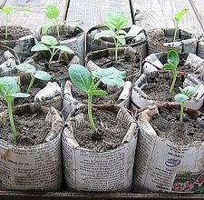
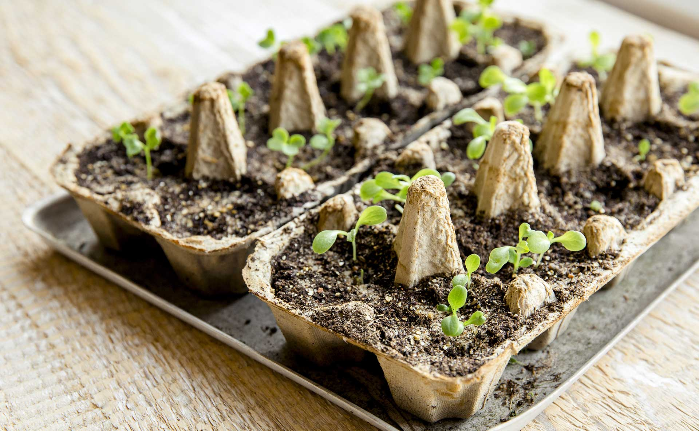
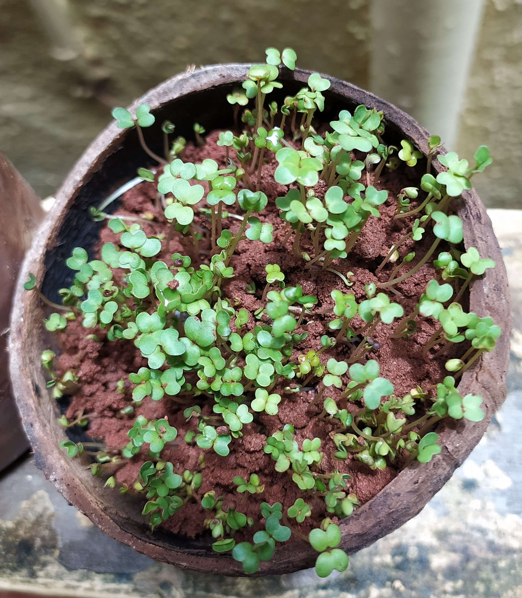
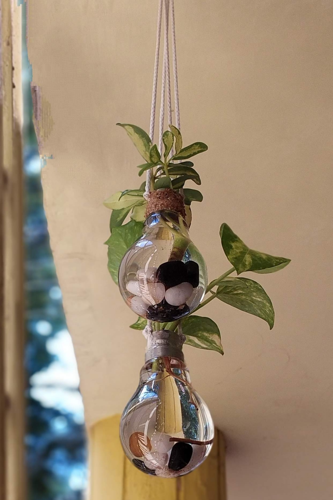
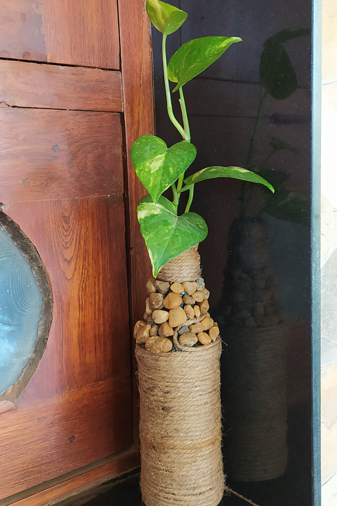

Gardeners are natural recyclers. If you’ve been gardening for years, you probably have a working compost pile
full of food scraps and compostable materials. This is one of the best ways to recycle in your garden
because it gives back to the earth and creates food for growing plants.
However, gardening with recycled materials doesn’t just include composting leftovers. Many gardeners enjoy
incorporating unique materials in their garden design such as old bathtubs, sinks, furniture, pallets,
tires, and even shoes. Before you think this is not a simple way or it’s not easy to grow plants or you have
real problems like pest control or no space for growing them, hear me out we can make it possible.
Our aim is to grow plants with what you discard. The milk packets and tins, plastic containers that come
with your food deliveries. I have even used coconut shells, filled them with soil, and grew microgreens.
Start by growing what is easy to grow. Microgreens are the easiest to grow and require very little space and
maintenance. They are very rewarding as they grow in a quick span of time in confined spaces.
1. Newspaper cups/pots

You don’t need fancy pots to start your little seedlings. If you take a look around your home, you might just
find a dozen different options for starting your seeds. One great way that actually holds up for a while is
paper cups. Make sure they are unwaxed so they compost better, poke a small hole in the bottom for drainage,
and then they are good to go. If you don’t keep paper cups around your house or don’t want to purchase any,
check with your local coffee shop for discarded cups and pick up a few coffee grounds to add to your compost
pile while you’re at it.
2. Egg Cartons

Cardboard egg cartons can be used to start a dozen seedlings, and then cut apart to plant each one when it's
time to plant them in the garden. As with newspaper seedling pots, there's no need to remove the plants from
the pots before planting, as the cardboard will break down in the soil as the plant grows.While you may have
started your seedlings in egg cartons before, you might not have considered that the eggs themselves could
be recycled in your garden as their own little planters.
3. Coconut Shells

Microgreens are vegetable greens harvested just after the cotyledon leaves have developed. They are used as a
nutrition supplement, a visual enhancement, and a flavor and texture enhancement. Microgreens can add
sweetness and spiciness to foods. Reusing the coconut shells to microgreens as they need little space.Make
holes at the bottom of a coconut shell. You can also use a tender coconut.Fill it with coco peat and plant
the seeds in the shell. The holes in the shell help the roots grow without any obstruction This eliminates
the use of plastic bags in the nursery and also, when the shell degrades in the soil, it provides nutrients
that help the plant grow. Use it to plant vegetables with shallow roots such as lettuce, fenugreek, green
grams, peas or even ornamental plants
4. Plastics!!
There are lots and lots of plastic materials that we use and discard every day. Instead of discarding them
which atlast goes to landfills, use them to grow greens. Milk packets,batter covers, oil cans, masala
pouches, parcel food containers, water cans and bottles and many other plastic items are great to use as
mini pots to grow seedlings,herbs,spring onions and also lettuce. Even you can grow the common plants like
tomatoes, chillies, beans in 2-3 litre flour packets that you buy at stores. You really dont need to think
about fancy while growing food. Just reuse what you have at home free of cost and get greens in return!
Creative Handmade Garden Decors

Burnt bulbs Decor
Don’t throw your old bulbs from now on, you can breathe new life into your burnt out bulbs with just a
little bit of work. Lightbulbs are a tried and true DIY go-to that are getting popular now. There are plenty
of creative and fun ways to upcycle this object into many useful things.Whether you’re turning one into a
bud vase or candy container, terrarium, or covering it with glitters into ornaments, these versatile pieces
of glass belong anywhere but in your trash.
The terrarium trend is big right now, and I love that homeowners are embracing bringing plants indoors - it
improves air quality and reminds us of the beauty of the natural world. Here's a way to display succulents
without consuming pricey new glass vessels: repurpose your lightbulbs. Clear lightbulbs (preferably used
ones that you are replacing) can be upcycled into beautiful hanging terrariums.
Finally, add sand, tiny pebbles and moss for air plants, and some soil for a mini-cactus or other succulent
variety. Soak the plants in water for a while before inserting them into the bulbs using tweezers. Add a few
drops or sprays of water now and then, and they will thrive.
Bottle Art Decor

Reusing glass bottles as decor is the new cool.You can decorate the bottles with stuff lying around in
your home such as wrapping it up with jute threads,laces,ribbons,sticking pebbles etc. Now you can
choose a plant of your choice(preferably climbers such as money plant) ,clip at the base of a leaf and
place it in your bottle with fresh water. It's the easiest houseplant you'll ever have, just keep the
container filled with water.This is a perfect and simple hack to elevate and add a green touch to your
space. Benefits of having a bottle garden is that it can be moved easily if needed, as to a different
position during different seasonal light and temperature.The bottle garden is virtually
maintenance-free, requiring only weekly watering.There are literally no reasons as to not to have a bottle garden.